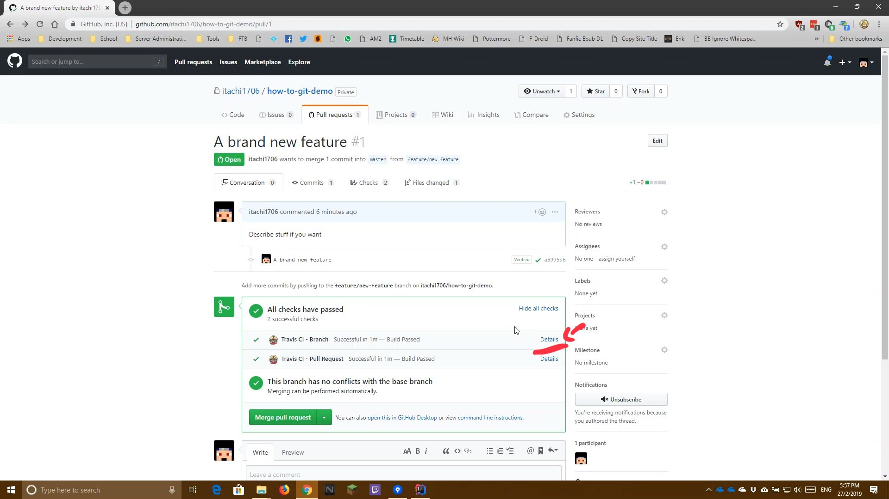
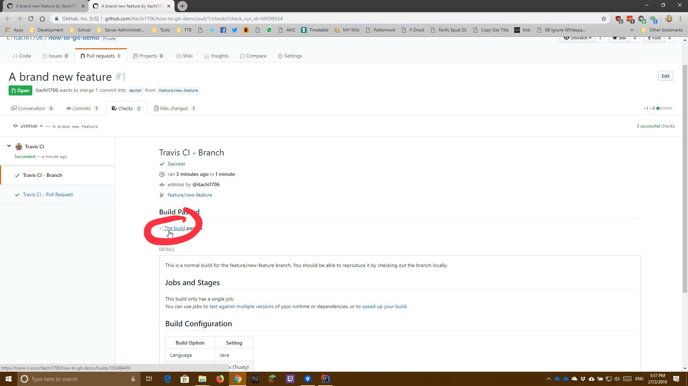
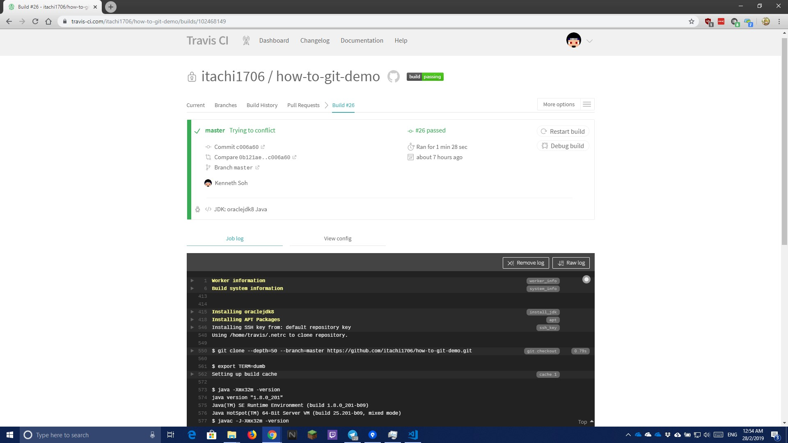

View Builds on Travis CI
↵ Return to Main Screen
Ever wonder what all those checks the CI is doing when you are doing a PR (or any commits actually)?
Or wonder why your build is failing for some reason? This will show you how to access the CI to view the logs
- Go too your PR (or commit) and click the Details link

- Click on the link for the build like shown in the picture below

- You can now view the logs as shown in the picture below

Demo Video
The following is a video on how this is being done. Read the how-to guide before watching the video for actual steps to do it